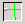
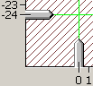

|
 Click the View Symmetry Guides button to display or hide a set of two vertical and one horizontal guide lines on the Drawing Board. Use these guides when drawing or moving , to ensure that your is . The guides can be moved by dragging handles located at the left side of the horizontal guide and at the bottom of one vertical guide. If the horizontal and left-hand vertical guides are positioned so that they intersect over a particular joint, then the intersection of the horizontal and right-hand vertical guides marks the location of a symmetrical joint on the opposite side of the truss. The View Symmetry Guides button functions as a "toggle." If the guides are visible, clicking the button will hide them. If the guides are hidden, clicking the button will display them. |
 |
The View Symmetry Guides button is located on the Display Toolbar. It can also be accessed from the View menu.
The View Symmetry Guides button is only available when the or the is active.
Several site configurations have a that is not located along the centerline of the bridge In these cases, an optimal structural design is not likely to be symmetrical.